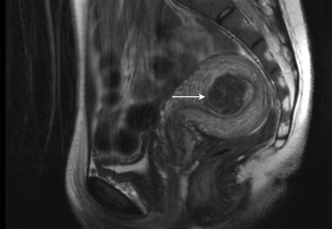

Аномальные маточные кровотечения: классификация. Клиника, дифференциальная диагностика
Количественные критерии нормального и аномального маточного кровотечения
Нарушения менструального цикла разграничиваются через измеримые параметры: длительность кровотечения, интервал и объём кровопотери.[лекция] Субъективная оценка ненадёжна: пациентки с реальной кровопотерей менее 80 мл могут называть менструации обильными, а женщины с истинной меноррагией — нормальными.[лекция, с. 6]
Нормальный менструальный цикл включает три параметра: интервал между менструациями 24–38 дней, длительность выделений 3–8 суток и объём кровопотери 5–80 мл.[лекция, с. 6]
| Параметр | Норма (FIGO) | Порог аномалии (↓) | Порог аномалии (↑) |
|---|---|---|---|
| Интервал между менструациями | 24–38 дней | менее 24 дней (пройоменорея) | более 38 дней (опсоменорея) |
| Длительность кровотечения | 3–8 дней | менее 3 дней | более 8 дней (длительное кровотечение) |
| Объём кровопотери | 5–80 мл | скудное (ниже нижней границы нормы) | более 80 мл (меноррагия / ОМК) |
Аномальное маточное кровотечение (АМК) — кровотечение, выходящее за пределы нормы по длительности (более 8 суток), объёму (более 80 мл) и/или частоте (интервал менее 24 дней).[лекция, с. 6] При кровопотере свыше 80 мл закономерно развивается железодефицитная анемия. Современный порог в 80 мл строже старых отечественных критериев гиперменореи (более 100–150 мл).[лекция, с. 6]
Для измерения кровопотери используется точный, но неудобный гравиметрический метод (взвешивание прокладок) или практичная PBAC-шкала (карта визуальной оценки). Сумма баллов в PBAC свыше 100 соответствует кровопотере более 80 мл и служит стандартом первичной оценки АМК.[лекция, с. 6]
В репродуктивном периоде частота дисфункциональных маточных кровотечений составляет от 10% до 37%. Диагноз АМК основан не на впечатлении, а на трёх измеримых параметрах, и PBAC-шкала позволяет получить надёжную оценку объёма кровопотери без лаборатории.[Савельева, с. 308]
Варианты нарушений менструального кровотечения
Меноррагия (гиперменорея) — обильное циклическое кровотечение: объём более 80 мл, длительность более 8 суток при сохранённом ритме (в старых источниках порог — более 100–150 мл). Сопровождается сгустками, гиповолемией и анемией.[лекция, с. 6]
Метроррагия — ациклическое кровотечение вне менструации, указывающее на органическую патологию (гиперплазия, рак эндометрия, миома, полипы, аденомиоз). Дисфункциональные маточные кровотечения в репродуктивном возрасте составляют от 10% до 37% всех случаев АМК и являются диагнозом исключения.[Савельева, с. 303]
Менометроррагия — сочетание обильных/длительных менструаций и ациклических кровотечений, приводящее к быстрой анемии. Характерно для сочетания органической патологии и гормональной дисфункции (например, аденомиоз сочетается с миомой матки в 60–80% случаев аденомиоза).[Радзинский, с. 284]
Полименорея по Айламазяну и Радзинскому — затяжные менструации длительностью более 7 суток (частые менструации с интервалом менее 21 дня называют пройоменореей).[Айламазян, с. 69] Олигоменорея — редкие менструации с интервалом более 35 дней (по Айламазяну)[Айламазян, с. 69] либо скудные менструации объёмом менее 50 мл или продолжительностью менее 2 дней (по Радзинскому, который редкие менструации именует опсоменореей).[Радзинский, с. 124]
| Вариант | Нарушенный параметр | Типичная ассоциированная патология |
|---|---|---|
| Меноррагия (гиперменорея) | Объём >80 мл и/или длительность >8 сут, ритм сохранён | Миома матки, аденомиоз, коагулопатии, овуляторная дисфункция |
| Метроррагия | Ациклические межменструальные кровотечения | Гиперплазия и рак эндометрия, полипы, аденомиоз |
| Менометроррагия | Объём + длительность + ациклические эпизоды | Сочетание аденомиоза и миомы, гиперпластические процессы эндометрия |
| Полименорея | Затяжные менструации: более 7 сут (Айламазян, Радзинский) | Ановуляция, недостаточность лютеиновой фазы |
| Олигоменорея | Редкие менструации с интервалом более 35 дней (Айламазян) или скудные — менее 50 мл либо менее 2 дней (Радзинский) | СПЯ, гипоталамическая аменорея, гиперпролактинемия |
Вывод, который из этого следует практически: тип нарушения — не просто термин для истории болезни, а первый навигационный знак в дифференциальной диагностике. Ациклическое кровотечение требует исключения органики, обильное циклическое — поиска структурной патологии матки или коагулопатии, редкое и скудное — оценки овуляции.
Острые, хронические и обильные маточные кровотечения
Острое АМК — эпизод интенсивного кровотечения, требующий немедленного вмешательства для предотвращения массивной кровопотери. Оценивается по скорости кровопотери и гемодинамической нестабильности; может развиваться на фоне хронического процесса или впервые.[лекция, с. 6]
Хроническое АМК — кровотечение, превышающее норму по продолжительности, объёму (>80 мл) и/или частоте, повторяющееся более 6 месяцев. Ведёт к истощению депо железа и анемии.[лекция, с. 6]
Обильное маточное кровотечение (ОМК) — чрезмерная менструальная кровопотеря, влияющая на физическое, социальное, эмоциональное или материальное благополучие женщины. Диагностируется по объективному порогу (>80 мл за менструацию) или по субъективной жалобе на более выраженные выделения, чем обычно.[лекция, с. 6]
| Параметр | Острое АМК | Хроническое АМК | ОМК |
|---|---|---|---|
| Временной критерий | Текущий эпизод, немедленная угроза | Повторяется более 6 месяцев | Не определяется временем |
| Ключевой критерий | Скорость кровопотери, гемодинамика | Хронически превышен объём (>80 мл) и/или длительность (>7 сут) и/или частота | Влияние на качество жизни; объём >80 мл или субъективно выраженнее обычного |
| Неотложность | Экстренная помощь | Плановое обследование и лечение | Зависит от выраженности; чаще плановая |
| Главное последствие | Острая кровопотеря, шок | Железодефицитная анемия, истощение | Снижение качества жизни, анемия |
Острое и хроническое АМК выделяются по течению, а ОМК — по тяжести воздействия. Хроническое кровотечение с объёмом более 80 мл за цикл, повторяющееся более 6 месяцев, может резко усилиться и стать острым АМК. Разграничение этих трёх понятий определяет не только диагноз, но и первый шаг лечения — экстренный или плановый.[лекция, с. 6]
Классификация АМК по системе PALM-COEIN (FIGO)
Система PALM-COEIN (FIGO, 2011) разделяет причины АМК у небеременных женщин репродуктивного возраста на две группы: структурные (PALM) и неструктурные (COEIN).[лекция, с. 6]

Группа PALM (структурные причины):
P — Polyp (полип): очаговые разрастания слизистой матки. Более чем в 70% случаев слизистая вокруг сохраняет нормальную секреторную трансформацию.[Радзинский, с. 270]
A — Adenomyosis (аденомиоз): прорастание желез эндометрия в миометрий. В 60—80% случаев сочетается с миомой матки.[Радзинский, с. 284]
L — Leiomyoma (лейомиома): субмукозные узлы (тип 0—2) деформируют эндометрий и дают наибольшую кровопотерю (на МРТ виден узел типа 2).
M — Malignancy and hyperplasia (малигнизация и гиперплазия): рак эндометрия и атипическая гиперплазия.[лекция, с. 6]
Группа COEIN (неструктурные причины):
C — Coagulopathy (коагулопатия): нарушения свёртывания (болезнь Виллебранда).
O — Ovulatory dysfunction (овуляторная дисфункция): отсутствие овуляции и прогестерона; частота дисфункциональных кровотечений в репродуктивном периоде, по данным разных авторов, — от 10% до 37%.[Савельева, с. 308]
E — Endometrial (эндометриальная дисфункция): диагноз исключения при нормальной структуре и овуляции; нарушено локальное образование простагландинов, фибринолиз или тонус сосудов.
I — Iatrogenic (ятрогенное кровотечение): вызвано ВМК (осложнение в 1,5—24% случаев), антикоагулянтами, тамоксифеном, антидепрессантами, кортикостероидами или гормонами.[лекция, с. 6]
N — Not yet classified (не классифицируемое): редкие или неизученные причины.
Диагнозы PALM-COEIN можно сочетать. Система требует последовательной проверки всех девяти позиций.
Возрастная классификация маточных кровотечений
Возрастная классификация дополняет PALM-COEIN, задавая приоритеты диагностического поиска.
| Возрастной период | Характерные причины АМК | Приоритетные диагнозы исключения |
|---|---|---|
| Пубертат (до 18 лет) — ювенильные кровотечения (ЮМК) | Ановуляция вследствие незрелости гипоталамо-гипофизарной оси; коагулопатии (болезнь Виллебранда и др.) | Нарушения гемостаза; гормонпродуцирующие опухоли яичников |
| Репродуктивный (18—45 лет) | Беременность и её осложнения; органическая патология (миома, аденомиоз, полипы, эндометриоз); овуляторная дисфункция; ятрогенные причины (ВМК, гормональные препараты) | Внематочная беременность; рак шейки матки; рак эндометрия (редко) |
| Перименопауза (45—55 лет) | Овуляторная дисфункция на фоне угасающей функции яичников; гиперплазия эндометрия; миома и аденомиоз | Атипическая гиперплазия эндометрия; рак эндометрия |
| Постменопауза (более 12 мес аменореи) | Атрофия эндометрия; полипы эндометрия; гиперплазия эндометрия; рак эндометрия | Рак эндометрия (обязательное исключение при любом кровотечении) |
Ювенильные маточные кровотечения (ЮМК) (от менархе до 18 лет) составляют 95% маточных кровотечений пубертата и 10—37,3% гинекологической патологии этого возраста. Вызваны незрелостью гипоталамо-гипофизарно-яичниковой оси или коагулопатиями (обязательна коагулограмма).[Савельева, с. 263]
В репродуктивном возрасте первоочерёдно исключают беременность, затем органическую патологию, овуляторные нарушения и ятрогенные факторы (ВМК даёт осложнения в 1,5—24% случаев).[лекция]
Перименопаузальное кровотечение (45—55 лет) протекает по типу менометроррагии. Обусловлено ановуляцией, гиперплазией эндометрия, аденомиозом и миомой (сочетаются в 60—80% случаев). Приоритет — исключение атипической гиперплазии и рака эндометрия.[Радзинский, с. 284]
Постменопаузальное кровотечение (после 12 месяцев аменореи) требует исключения рака эндометрия. Симптом капли крови на белье встречается в 30—40% случаев рака эндометрия без гиперэстрогении. При полипах эндометрия более 1,0—1,5 см требуется гистологическая верификация (УЗИ, биопсия).[Радзинский, с. 299; лекция, с. 12]
Патогенез дисфункциональных маточных кровотечений: ановуляция
Дисфункциональные маточные кровотечения (ДМК) — АМК без структурных причин (группа «O»).[Савельева, с. 308] В их основе лежит ановуляция (отсутствие жёлтого тела и прогестерона), протекающая в двух формах:
Атрезия фолликула: фолликул подвергается апоптозу, эстрадиол низкий или умеренный (50–100 пмоль/л). Пролиферация эндометрия скудная. Кровотечения ациклические, длительные, скудные или умеренные (не более 80 мл). Характерна для пубертата.[лекция, с. 6]
Персистенция фолликула: зрелый фолликул не разрывается, секретируя эстрадиол (400–900 пмоль/л) неделями. Эндометрий избыточно пролиферирует. Развивается по двум механизмам: эстрогенный прорыв (возникает гнездный некроз эндометрия) или кровотечение отмены эстрогенов (при гибели фолликула кровопотеря превышает 80 мл и достигает 100–150 мл). Характерна для климактерия.[лекция, с. 6]
Гиперплазия эндометрия и полипы эндометрия как структурные причины АМК
Гиперплазия эндометрия — патологическое разрастание железистого и стромального компонентов слизистой оболочки матки без инвазии в миометрий. Патогенетическую основу составляет избыточное и длительное воздействие эстрогенов без адекватного прогестеронового противовеса при ановуляции.
Классификация гиперплазии строится по архитектурной сложности железистого компонента и наличию или отсутствию клеточной атипии (Таблица 1).
| Тип гиперплазии | Архитектура желез | Клеточная атипия | Риск малигнизации без лечения | Статус |
|---|---|---|---|---|
| Простая без атипии | Увеличение числа желез, единичные кисты, строма сохранена | Нет | Низкий | Доброкачественная |
| Сложная без атипии | Тесное расположение желез, пальцеобразные выросты, строма вытеснена | Нет | Низкий | Доброкачественная |
| Простая с атипией | Умеренное скопление желез | Есть (ядерная гиперхромия, нарушение полярности) | 8% | Предрак |
| Сложная с атипией | Выраженная железистая «скученность», папиллярные выросты | Есть (выраженная, с патологическими митозами) | 29% | Предрак |
Простая гиперплазия — это равномерное увеличение числа желез при сохранённой строме; сложная гиперплазия — железы деформированы, тесно прилежат друг к другу, строма вытеснена. Оба варианта без атипии доброкачественные. При атипической гиперплазии в железистом эпителии обнаруживаются признаки ядерной атипии: гиперхромные ядра, нарушение полярности, патологические митозы, оксифильная цитоплазма. Простая атипическая гиперплазия без лечения прогрессирует в рак у 8% больных, сложная атипическая — у 29%, что представляет собой предрак эндометрия. Риск зависит от сопутствующих факторов: ожирения, сахарного диабета, СПКЯ, гиперлипидемии.[Савельева, с. 219]
Проявления — маточные кровотечения (чаще ациклические в виде метроррагий, реже меноррагии). В репродуктивном возрасте они идут по типу менометроррагии, в пременопаузе — ациклические, в постменопаузе — мажущие, скудные. Симптомом у женщин репродуктивного возраста также является первичное бесплодие.[Савельева, с. 425]
Полип эндометрия — очаговое выпячивание слизистой оболочки матки в её полость, сформированное железами, стромой и питающим сосудом. Морфологические типы: железистые (на фоне дисгормональных нарушений и гиперплазии); железисто-фиброзный полип (в строме фиброзные волокна, железы среди плотной соединительной ткани; более чем в 70% случаев слизистая вокруг сохраняет адекватную секреторную трансформацию); фиброзные (из соединительной ткани с единичными атрофичными железами, чаще в постменопаузе); аденоматозные полипы (железистый эпителий с признаками атипии; относятся к предраку).[Радзинский, с. 270]
При УЗИ с допплеровским исследованием полип — гиперэхогенное образование с единственным питающим сосудом в основании. Факторы риска злокачественной трансформации: постменопауза, размеры полипа более 1,0–1,5 см, наличие АМК. Гистероскопия позволяет оценить количество, локализацию и макроструктуру полипов.[лекция, с. 12] Клинически полипы проявляются межменструальными выделениями, менометроррагиями, реже обильными менструациями; при больших размерах возможны схваткообразные боли, при некрозе — гноевидные выделения. При мелких полипах симптомы могут отсутствовать.[Савельева, с. 425]
Вывод: гиперплазия эндометрия без атипии и железисто-фиброзные полипы — доброкачественные причины АМК; появление атипии переводит процесс в категорию предрака с риском малигнизации от 8% до 29%.
Ювенильные маточные кровотечения: дифференциальная диагностика
Частота ЮМК в структуре гинекологических заболеваний детского и юношеского возраста составляет от 10 до 37,3%.[Савельева, с. 263] Группы патологий для дифференциальной диагностики:
- Нарушения гемостаза (тромбоцитопении, тромбоцитопатии, наследственные дефициты факторов свёртывания, геморрагические васкулиты).
- Патология печени (снижение синтеза факторов свёртывания при хронических гепатитах).
- Осложнения беременности (нарушенная беременность у старших подростков; исключается тестом на ХГЧ).
- Синдром поликистозных яичников (СПКЯ) — хроническое эндокринное расстройство с нарушением фолликулогенеза, гиперандрогенией и инсулинорезистентностью; проявляется олигоменореей, межменструальными кровотечениями, акне, гирсутизмом, acanthosis nigricans.
- Гормонопродуцирующие опухоли, в частности гранулезоклеточная опухоль яичника (составляет от 1 до 4% гормонпродуцирующих новообразований яичников). Её ювенильный тип вызывает ложное преждевременное половое созревание (нерегулярные кровянистые выделения при незначительном развитии вторичных половых признаков, соматическое развитие и костный возраст не ускорены). Характерна триада признаков: цианотичность вульвы, складчатость влагалища и симптом зрачка (расширение и зияние наружного зева шейки матки). Диагноз подтверждают УЗИ с допплером и определение эстрадиола и ингибина B.[Савельева, с. 303]
Алгоритм дифференциальной диагностики включает четыре шага:
- Исключение острой хирургической и акушерской патологии (тест на ХГЧ, УЗИ органов малого таза).
- Исключение коагулопатии и патологии печени (ОАК с тромбоцитами, коагулограмма, биохимический профиль печени).
- Исключение органической патологии половой сферы (опухоли яичников, эндометриоз, туберкулёз, инородное тело; оценка УЗИ и гормонов: эстрадиол, тестостерон, ЛГ, ФСГ, пролактин, ТТГ).
- Установление ановуляторной дисфункции как диагноза исключения.
Сбор анамнеза у подростка требует беседы без родителей. Физикальный осмотр включает оценку полового развития по Таннеру, признаков гиперандрогении, тромбоцитопении и анемии. Гинекологический осмотр у не живших половой жизнью проводится ректоабдоминально; осмотр в зеркалах — по показаниям (позволяет выявить цианотичность вульвы, складчатость влагалища и симптом зрачка).
Вывод: дифференциальная диагностика ЮМК — это последовательное исключение коагулопатий, патологии печени, осложнений беременности, СПКЯ и гормонопродуцирующих опухолей; диагноз ановуляторной дисфункции ставится последним.
Репродуктивный возраст: дифференциальная диагностика кровотечений
Первый шаг диагностики АМК в репродуктивном возрасте — исключение беременности и её осложнений. Эктопическая беременность (развитие беременности вне полости матки, чаще в трубе) дает кровотечение на фоне задержки менструации, одностороннюю боль в животе и положительный тест на β-ХГЧ при пустой полости матки по УЗИ. Определение β-ХГЧ выполняется первейшим шагом. Выкидыш характеризуется расположением плодного яйца в полости матки или цервикальном канале, схваткообразными болями и отхождением тканей. Трофобластическая болезнь (опухоли из клеток плаценты) даёт высокий уровень β-ХГЧ, «снежную бурю» при УЗИ и тяжёлое кровотечение.
Среди органических причин матки: Субмукозная миома (узел, выступающий в полость матки) проявляется регулярной обильной меноррагией; матка увеличена, при УЗИ выявляется гипоэхогенный узел. Аденомиоз (прорастание эндометрия вглубь стенки матки) проявляется обильными и длительными менструациями, прогрессирующей дисменореей и «губчатой» маткой при УЗИ. Аденомиоз в 60—80% случаев сочетается с миомой матки. Полипы эндометрия вызывают межменструальные мажущие выделения или метроррагию. В 70% случаев при наличии железисто-фиброзных полипов слизистая оболочка характеризуется адекватной секреторной трансформацией при овуляторном цикле.[Радзинский, с. 284]
ВЗОМТ (инфекционное поражение матки, труб и яичников) вызывают межменструальные выделения, двустороннюю боль в животе, болезненность придатков, гнойные или сукровичные выделения из цервикального канала, лихорадки и лейкоцитоз. Полипы эндометрия у пациенток с хроническими ВЗОМТ при сохранённом цикле свидетельствуют о нарушении отторжения функционального слоя эндометрия на отдельных участках.[Радзинский, с. 270]
Гиперплазия эндометрия развивается на фоне ановуляции и гиперэстрогении (факторы риска: СПКЯ, ожирение, сахарный диабет, бесплодие) и проявляется ациклическим кровотечением (менометроррагией) после задержки, а также первичным бесплодием.[Савельева, с. 425]
| Причина | Характер кровотечения | Ключевые сопутствующие признаки | Первый диагностический шаг |
|---|---|---|---|
| Эктопическая беременность / выкидыш / трофобластическая болезнь | Любое; на фоне задержки или после беременности | Боль в животе, задержка, β-ХГЧ положительный | β-ХГЧ + УЗИ полости матки |
| Субмукозная миома | Обильная меноррагия, цикл регулярный | Увеличение матки, дисменорея; цикл сохранён | Трансвагинальное УЗИ, гистероскопия |
| Аденомиоз | Обильная меноррагия / менометроррагия | Прогрессирующая дисменорея; матка «губчатая»; сочетание с миомой в 60—80% | Трансвагинальное УЗИ; МРТ |
| Полип эндометрия | Мажущие межменструальные выделения; реже ОМК | Нередко бессимптомно; овуляторный цикл в 70% случаев | УЗИ, соногистерография, гистероскопия |
| ВЗОМТ | Межменструальные кровянистые выделения | Боль в животе, болезненность придатков, лихорадка, выделения из цервикального канала | Мазки на флору, ПЦР, УЗИ малого таза |
| Гиперплазия эндометрия | Ациклическое, менометроррагия, после задержки | Ановуляция, бесплодие, ожирение, СПКЯ; риск атипии и малигнизации | УЗИ эндометрия, биопсия (гистология) |
Субмукозная миома и аденомиоз вызывают меноррагию, полипы и ВЗОМТ — межменструальные выделения, гиперплазия — ациклические кровотечения. Определение β-ХГЧ первоочередно у всех женщин репродуктивного возраста.[Савельева, с. 123] Объём кровопотери не определяет причину, для диагностики необходима биопсия или гистероскопия.[Айламазян, с. 117]
Главный вывод раздела: в репродуктивном возрасте дифференциальная диагностика АМК движется в строгом порядке — сначала исключение патологии беременности, затем органической патологии матки и воспаления, и лишь потом — диагноз дисфункции или гиперплазии эндометрия. Риск ошибки — от разрыва трубы до атипической гиперплазии с риском малигнизации 29%.[лекция]
Пери- и постменопауза: дифференциальная диагностика кровотечений
Постменопаузальное кровотечение (выделения спустя 12 и более месяцев после последней менструации) требует онкологической настороженности.[лекция]
Рак эндометрия (злокачественная опухоль из железистого эпителия слизистой оболочки тела матки) имеет два патогенетических варианта: первый (у 60—70% больных) развивается на фоне гиперэстрогении (ановуляторные кровотечения, ожирение, сахарный диабет, СПКЯ), опухоль высокодифференцированная; второй (у 30—40% больных) возникает в постменопаузе на фоне атрофии эндометрия, опухоль низкодифференцированная и метастазирует рано.[Радзинский, с. 299] Заболевание дебютирует мажущим кровотечением. Маркеры риска: «триада риска» (ожирение, АГ, сахарный диабет), поздняя менопауза (после 50 лет), бесплодие, приём эстрогенов без прогестагенов. Рак шейки матки проявляется контактными или самостоятельными метроррагиями и водянистыми белями с запахом.
Фиброзные полипы эндометрия состоятельны из соединительной ткани с атрофичными железами; их риск малигнизации возрастает при размере более 1,0—1,5 см и наличии АМК.[Савельева, с. 219]
Феминизирующие опухоли яичников (вырабатывающие эстрогены) проявляются метроррагией и симптомами «омоложения» (нагрубание желёз, увлажнение влагалища). Текома наблюдается преимущественно в пери- и менопаузе; гранулезоклеточная опухоль встречается в любом возрасте. В эндометрии развиваются гиперплазия, полипы или аденокарцинома. Лабораторно: повышен эстрадиол, снижен ФСГ.
Алгоритм обследования при первом эпизоде постменопаузального кровотечения: 1. Гинекологический осмотр и кольпоскопия (исключить рак шейки матки, атрофический кольпит). 2. Трансвагинальное УЗИ (эндометрий более 4—5 мм — показание к инвазивной диагностике). 3. Гистероскопия с раздельным диагностическим выскабливанием (РДВ). 4. Гормональный профиль (эстрадиол, ФСГ, ингибин B). 5. CA-125 и хирургическое лечение при опухоли яичника.
Гнойные и водянистые выделения в постменопаузе требуют госпитализации из-за риска распада опухоли или пиометры. Главный вывод этого раздела прост: в постменопаузе ни одно кровотечение — ни обильное, ни мажущее — не может считаться «функциональным» до морфологической верификации. Алгоритм не сокращается ни при каких обстоятельствах.[Савельева, с. 432]
Лабораторная диагностика аномальных маточных кровотечений
| Тест | Показание | Что оцениваем | Диагностическая цель |
|---|---|---|---|
| Бета-ХГЧ в крови | Любое АМК у женщины репродуктивного возраста — первым делом, до всего остального | Наличие или отсутствие хорионического гонадотропина | Исключить беременность, эктопическую беременность, трофобластическую болезнь |
| Клинический анализ крови | Все формы АМК, особенно хроническое АМК и ОМК | Гемоглобин, эритроциты, гематокрит, тромбоциты | Оценить степень анемии как маркер хронической кровопотери; исключить тромбоцитопению |
| Коагулограмма | ЮМК, дебют меноррагии с менархе, носовые кровотечения, петехии, гематомы в анамнезе | Время кровотечения, АПТВ, фактор Виллебранда, агрегация тромбоцитов | Выявить коагулопатию: болезнь Виллебранда, тромбоцитопатии, дефицит факторов свёртывания |
| Прогестерон в лютеиновую фазу | Подозрение на овуляторную дисфункцию, нерегулярный цикл, ановуляторный характер кровотечения | Уровень прогестерона на 21–25-е сутки цикла | Подтвердить или опровергнуть ановуляцию: уровень ниже 9,5 нмоль/л указывает на ановуляторный цикл |
Бета-ХГЧ (β-субъединица хорионического гонадотропина человека, вырабатываемая хорионом после имплантации) выполняется первым при любом АМК в репродуктивном возрасте для исключения беременности и ее патологий.
Клинический анализ крови определяет степень анемии при хронической кровопотере (превышающей 80 мл) и выявляет тромбоцитопению.[лекция, с. 6]
Коагулограмма (оценка системы гемостаза: времени кровотечения, АПТВ, агрегации тромбоцитов, факторов свёртывания) необходима для выявления коагулопатий, в частности болезни Виллебранда — наследственного дефекта белка первичной адгезии тромбоцитов.
Уровень прогестерона на 21–25-е сутки цикла ниже 9,5 нмоль/л подтверждает ановуляцию и эстрогенный прорыв. Частота ДМК в репродуктивном периоде составляет от 10% до 37%.[Савельева, с. 308]
Пропуск любого из этих шагов означает, что часть причин АМК остаётся невидимой — и лечение строится на неполной картине.
Инструментальная диагностика: УЗИ и гистероскопия
Инструментальные методы устанавливают причину АМК.[Савельева, с. 308]
Методом выбора является трансвагинальное УЗИ: расстояние от датчика до эндометрия сокращается примерно в 5–7 раз по сравнению с трансабдоминальным, что обеспечивает высокое разрешение. Исследование оценивает размеры матки, миометрий, толщину эндометрия (М-эхо) и яичники. Выявляет гиперплазию эндометрия, полипы, субмукозную миому, интрамуральные узлы, аденомиоз, поликистозные яичники и нарушенную трубную беременность.[Айламазян, с. 118]
Для уточнения диагноза используют соногистерографию (заполнение полости изотоническим раствором, расправляющим стенки) и цветовое допплеровское картирование (выявляет одиночный сосуд при полипе или хаотичный кровоток при гиперплазии/раке), определяющее участок для прицельной биопсии.
Гистероскопия — осмотр полости матки оптической системой через цервикальный канал с использованием углекислого газа, изотонического раствора натрия хлорида или 5% раствора декстрозы. Позволяет визуализировать формы полипов, субмукозные узлы, очаги аденомиоза, синехии, перегородки, остатки плодного яйца, смещение ВМК и признаки рака.[Айламазян, с. 66]
Показания к гистероскопии: АМК в репродуктивном, пери- и постменопаузальном периодах; неясные изменения по УЗИ; бесплодие или привычная потеря беременности.[Айламазян, с. 66] Гистероскопия позволяет выполнить прицельную полипэктомию под контролем зрения, предотвращая оставление полипа, характерное для слепого выскабливания.[Савельева, с. 432]
Раздельное диагностическое выскабливание (РДВ) заключается в последовательном выскабливании слизистой шеечного канала, а затем тела матки с отправкой материала в разных флаконах на морфологическое исследование. Выполняется при подозрении на рак шеечного канала и тела матки, а также в пери- и постменопаузе. Отсутствие ворсин хориона исключает маточную беременность. РДВ рекомендуется проводить под контролем гистероскопии.
Диагностический алгоритм включает три уровня: 1) трансвагинальное УЗИ (все пациенты); 2) гистероскопия (визуальная верификация или рецидивы); 3) РДВ под контролем гистероскопии (подозрение на рак/гиперплазию, постменопауза).
Главный вывод раздела: трансвагинальное УЗИ открывает диагностический алгоритм при АМК, гистероскопия его уточняет, раздельное диагностическое выскабливание закрывает — морфологическим диагнозом.[лекция]
Раздельное диагностическое выскабливание: показания и противопоказания
Процедура также называется лечебным выскабливанием, так как механически прерывает кровотечение до получения гистологического ответа. Экстренные показания: неостановимое кровотечение и остатки плодного яйца. Плановое показание: верификация гиперплазии эндометрия и постменопаузальное кровотечение.
Абсолютное противопоказание — острый эндометрит (риск генерализации инфекции и перфорации). Временное противопоказание — некорригированная коагулопатия (особенно у подростков, где часта болезнь Виллебранда).[Савельева, с. 54]
| Критерий | Лечебное выскабливание | Аблация эндометрия |
|---|---|---|
| Экстренные показания | Неостановимое кровотечение; остатки плодного яйца | Не применяется в экстренной ситуации |
| Плановые показания | Верификация гиперплазии эндометрия; постменопаузальное кровотечение | Меноррагия; неэффективность гормонотерапии; возраст старше 35 лет; отказ от деторождения |
| Абсолютные противопоказания | Острый эндометрит; некорригированная коагулопатия | Желание сохранить фертильность; подозрение на рак эндометрия |
| Лечебный эффект | Немедленный гемостаз; однократный | Стойкое снижение или прекращение менструаций |
| Ограничения | При рецидивирующих кровотечениях эффект временный | Необратима; не заменяет гистологическую верификацию |
При рецидивах выскабливание дает лишь временный эффект. Для долгосрочного контроля применяют аблацию эндометрия — хирургическое разрушение базального слоя. Условия: тяжелые меноррагии, неэффективность гормонотерапии, возраст старше 35 лет и отказ от деторождения.[Радзинский, с. 124] Процедура необратима и проводится только после предварительного выскабливания с гистологическим исключением рака и атипической гиперплазии.
Выскабливание — не альтернатива гистероскопии, а дополнение к ней: проведение выскабливания под гистероскопическим контролем снижает риск неполного удаления патологических очагов.
Источники
- Гинекология в таблицах
- Гинекология. Айламазян 2013
- Гинекология. Радзинский, Фукс 2014
- Гинекология. Савельева, Бреусенко 2018 (4-е изд)
- Национальное руководство. Савельева, Кулаков, Манухин 2009
Иллюстрации
- Europe PMC, CC BY-ND, https://europepmc.org/article/PMC/PMC13340680
- Europe PMC, CC BY, https://europepmc.org/article/PMC/PMC12865526
- Europe PMC, CC BY, https://europepmc.org/article/PMC/PMC12865526
- Europe PMC, CC BY, https://europepmc.org/article/PMC/PMC13190713
- Europe PMC, CC BY, https://europepmc.org/article/PMC/PMC13543642